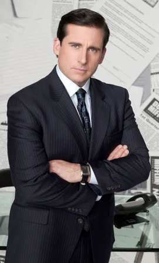
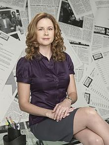
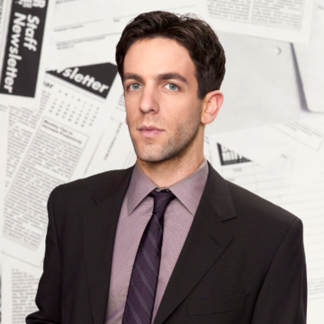

Our Mission
"You miss 100% of the shots you don't take" — Wayne Gretzky
— Michael
Scott
Our mission is one we do not take lightly. Don't EVER, for any reason, do anything, to anyone, for any reason, ever, no matter where, or who, or who you are with, or where you are going, or where you've been. EVER. for any reason. WHATSOEVER.
We pride ourselves on honor, integrity, distinction, privilege, glory and responsibility.
My company's purpose is to:
- Provide high product quality
- Provide superior customer service
- Protect the quality of the environment
- Ensure equal access to resources
- Encourage innovation/creativity
- Practice sustainable development
Meet our Team
| Founder & CEO Michael G. Scott |
 | Michael Gary Scott has over 15 years of experience in the paper industry. Scott began his career as as a salesman at Dunder-Mifflin. After impressing the leadership team with his sales abilities, Scott was promoted to Regional Manager of Dunder-Mifflin Scranton. After being promoted to a regional manager at a young age, he continued to treat work-related relationships as personal friendships. Michael Scott acknowledges the difficulty because his colleagues are all lower than him in the workplace's hierarchy. Despite his ineptitude, Michael is prone to brief bouts of surprising insight and is shown to have a kind heart as he shows deep, family-like affection towards the people working in the Scranton branch. The staff initially finds Michael annoying but he grows on them and is given emotional goodbyes during his final days in Scranton. |
|---|---|---|
| Head of Sales Pamela Halpart |
 | Pam Halpert (formerly Beesly) has many years of administrative experience. Before joining the Michael Scott Paper Company, Halpert was the lead receptionist at Dunder-Mifflin Scranton. Originally meek and passive, Pam Halpert grew more assertive as the years passed, prompting her to reassess her career and life goals. From her years working the front desk, Pam has become well-acquainted with the Dunder-Mifflin staff and is consistently shown to have a thorough understanding of her coworkers' personalities, including the more eccentric individuals Dwight Schrute and Michael Scott. She uses this familiarity to manipulate them, often for their and the company's best interests (such as her giving the staff elaborate instructions on how to handle a heartbroken Michael) but also occasionally for her own. |
| Head of Marketing and Business Development Ryan Howard |
 | Ryan Howard was a member of a fraternity in college and holds an MBA from the University of Scranton's Kania School of Management. His dream is to one day own his own business. Ryan Howard started his career as an office temp at Dunder-Mifflin. He earned the nickname "Fire Guy" for starting a small fire when he overcooked his cheese pita in the toaster oven. Ryan Howard worked his way up through the ranks, and later became a Vice President, North East Region and Director of New Media at Dunder-Mifflin. Ryan has encountered some minor setbacks. He was criminally charged and later terminated for misleading Dunder-Mifflin's shareholders via his website's sales numbers, effectively committing fraud. Prior to joining our team, Ryan was a bowling alley employee. Now, Ryan Howard is an integral part of the Michael Scott Paper Company as our Head of Marketing and Business Development. |